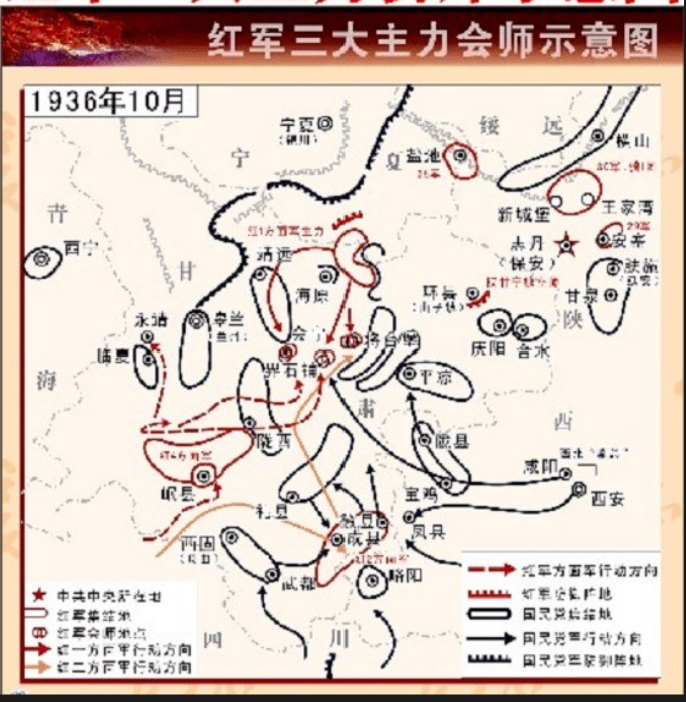

只允许接收
观看、听讲、记忆，观众很少有机会作出真正影响体验的选择。
Product Positioning
观众在1—3分钟内进入一个历史节点，依据史料完成行动，并生成一份个人长征记忆。

Primary Sources In Action
每关右上角都有统一史料抽屉。玩家可以查看本关涉及的地图、照片、手稿及来源说明；不点开也不会阻断通关。



3D Memory Fragments


Finale · Huining
玩家从前七关史料中选择材料，选择一个主题与三块碎片，再说出自己理解的长征。
跨关卡选择历史依据
团结、选择、牺牲、信念
组成个人数字展台
留下自己的理解